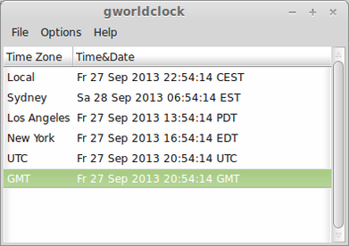

tzwatch
Dieser Artikel wurde für die folgenden Ubuntu-Versionen getestet:
Dieser Artikel ist größtenteils für alle Ubuntu-Versionen gültig.
Zum Verständnis dieses Artikels sind folgende Seiten hilfreich:
 Während unter Unity und GNOME eine sehr komfortable Uhr mit Zeitzonen zur Verfügung steht, sieht die Situation bei anderen Desktop-Umgebungen und auf der Kommandozeile nicht so rosig aus. Zwar lässt sich mit dem Befehl
Während unter Unity und GNOME eine sehr komfortable Uhr mit Zeitzonen zur Verfügung steht, sieht die Situation bei anderen Desktop-Umgebungen und auf der Kommandozeile nicht so rosig aus. Zwar lässt sich mit dem Befehl date die aktuelle Uhrzeit in Erfahrung bringen, aber wie spät ist es im gleichen Augenblick beispielsweise in Tokyo?
Tzwatch ist eine einfache Weltzeituhr für die Kommandozeile, die das Problem löst. Mit Gworldclock steht alternativ eine ebenfalls einfach gehaltene grafische Lösung zur Verfügung. Weitere Möglichkeiten sind im Artikel Amateurfunk zu finden.
Installation¶
 Das Programm ist in den offiziellen Paketquellen enthalten und kann über das folgende Paket installiert [1] werden:
Das Programm ist in den offiziellen Paketquellen enthalten und kann über das folgende Paket installiert [1] werden:
tzwatch (universe)
 mit apturl
mit apturl
Paketliste zum Kopieren:
sudo apt-get install tzwatch
sudo aptitude install tzwatch
Konfiguration¶
Das Programm bezieht seine Einstellungen aus der Datei ~/.tzlist im Homeverzeichnis. Diese Datei muss zuerst mit einem Editor [2] angelegt werden. Ein Beispiel:
Local "Lokal" America/Los_Angeles "Los Angeles" America/New_York "New York" America/Sao_Paulo "Sao Paulo" Europe/London "London" Europe/Paris "Paris" Europe/Istanbul "Istanbul" Europe/Moscow "Moskau" Asia/Calcutta "Kalkutta" Asia/Shanghai "Shanghai" Asia/Tokyo "Tokyo" Australia/Sydney "Sydney" US/Hawaii "Hawaii"
Wer weitere Orte hinzufügen möchte, wirft einen Blick in das Verzeichnis /usr/share/zoneinfo/.
Verwendung¶
Die Nutzung ist nicht weiter kompliziert [3]:
tzwatch
Thu May 24 15:38:00 CEST 2012 Local Thu May 24 06:38:00 PDT 2012 America/Los_Angeles Thu May 24 09:38:00 EDT 2012 America/New_York Thu May 24 10:38:00 BRT 2012 America/Sao_Paulo Thu May 24 14:38:00 BST 2012 Europe/London Thu May 24 15:38:00 CEST 2012 Europe/Paris Thu May 24 16:38:00 EEST 2012 Europe/Istanbul ...
Mit der Option -f FORMAT lässt sich die Ausgabe weiter verfeinern:
tzwatch -f %H:%M:%S
Weitere Details zu den möglichen Formaten sind der Manpage von strftime zu entnehmen. Eine weitere Hilfe bei der Auswahl der jeweiligen Formatparameter ist For a Good Strftime  .
.
In Kombination mit dem Befehl watch werden die Uhrzeiten laufend aktualisiert:
watch -tn 1 tzwatch -f %T
Die Anzeige lässt sich mit Strg + C beenden.
Gworldclock¶
 Wer eine Weltzeituhr nicht in einem Terminal, sondern innerhalb einer Desktop-Umgebung in einem eigenen Fenster öffnen möchte, installiert sich das folgende Programm:
gworldclock (universe)
mit apturl
Paketliste zum Kopieren:
sudo apt-get install gworldclock
sudo aptitude install gworldclock
Anschließend ruft man den Eintrag "Zubehör -> World Clock (gworldclock)" im Anwendungsmenü auf. Gworldclock nutzt die gleiche Konfigurationsdatei wie tzwatch und aktualisiert sich automatisch. Als Ortsname wird die zweite Spalte der ~/.tzlist verwendet.
 Übersicht zu weiteren nützlichen Shell-Befehlen
Übersicht zu weiteren nützlichen Shell-Befehlen- Erstellt mit Inyoka
-
 2004 – 2017 ubuntuusers.de • Einige Rechte vorbehalten
2004 – 2017 ubuntuusers.de • Einige Rechte vorbehalten
Lizenz • Kontakt • Datenschutz • Impressum • Serverstatus -
Serverhousing gespendet von